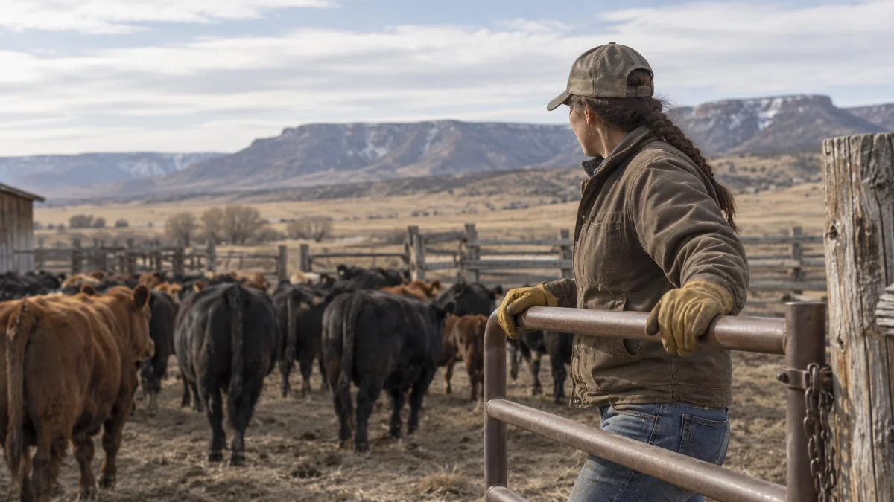

Build the right learning solution
Turn dense content, unclear requirements, and competing constraints into learning that is structured, usable, and tied to real performance.
Learning strategy, design, and program recovery
Sagebrush Design untangles difficult learning and performance problems, recovers stalled projects, and builds practical solutions grounded in how the work actually gets done.
Problems Sagebrush Design solves
Sometimes the answer is a course. Sometimes it is a workflow, a simulation, a project reset, or a clearer way to help people decide.
Turn dense content, unclear requirements, and competing constraints into learning that is structured, usable, and tied to real performance.
Bring visibility, review discipline, resource alignment, and decision structure to projects that have lost momentum.
Use AI and digital tools to speed drafting, prototyping, and iteration while people, source material, and professional judgment stay in control.

Agriculture & rural
Learning design and project leadership backed by lived agricultural experience — built for operations, equipment, safety, seasons, limited time, and people who do not work behind a desk.
Interactive agriculture myth-busting learning designed for mobile, QR, kiosk, and event use.
How Sagebrush Design works
AI accelerates the work. It does not replace source validation, stakeholder requirements, or professional judgment.
Clarify the performance need, audience, constraints, source material, and what success needs to look like.
Define the learning path, modality, interactions, workflow, and evidence needed before development begins.
Develop efficiently, use AI where it adds value, review against source material, and test the experience before release.
Manage reviews, decisions, handoff, implementation details, and the work needed to keep the project moving.
About Sagebrush Design
Sagebrush Design is led by Samantha Farr, a learning architect and project leader with 15+ years turning complex requirements into practical learning and performance solutions — across aviation, government, healthcare, energy, and agriculture.
Raised in ranching and farming, she brings real-world context to agriculture and rural organizations.
Start a conversation
Complex, stalled, highly constrained, or hard to translate into something people can use — those are the problems worth discussing.